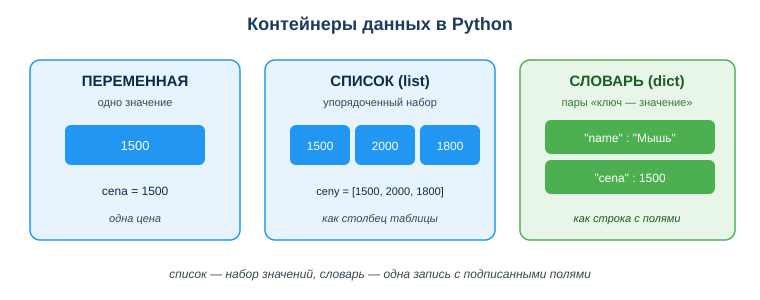

Дисциплина: Применение информационно-коммуникационных и цифровых технологий
Результат обучения: РО 2.3 — обработка и анализ данных с применением Python и ИИ · Объём темы: 6 часов
Квалификация: 4S06130105 «Техник информационных систем»
Расскажу, как это выглядит в реальной работе, а не в учебнике. Тебе в мессенджер падает журнал времён ответа сервера в миллисекундах — [1500, 2000, 1800] — и три вопроса одной строкой: «сколько времени суммарно, какое среднее время ответа, какие ответы медленнее 1800 мс?». Три числа ты и в уме сложишь. Но это ловушка спокойствия. Завтра пришлют не три замера, а триста. Через неделю — выгрузку из базы на тридцать тысяч строк. И вот тут калькулятор превращается в вечер убитого времени и гарантированную арифметическую ошибку где-то в середине.
Именно на этой развилке начинается Python. Несколько строк кода — и машина сама пройдёт по всему списку, сложит, поделит, отберёт нужное. И вот что важно понять сразу: для трёх значений и для тридцати тысяч код будет почти одинаковым. Ты один раз описываешь правило обработки, а объём данных машину не волнует. В этом вся сила и весь смысл: человек не масштабируется, а правило — да.
И не пугайся слова «программировать». Тебе не надо быть гуру языка, чтобы решить задачу выше. Надо понять пять строительных блоков — переменную, список, словарь, цикл и условие — и научиться их соединять. Всё. Из этих пяти кирпичиков собирается практически любая обработка данных, с которой ты столкнёшься в профессии: подсчёт итогов по заказам, фильтрация записей из базы, сведение ответов от сервера, подготовка чисел для отчёта или для модели машинного обучения.
И это не «учебный» навык, который сдал и забыл. Любой отчёт, любая аналитика, любая модель ИИ начинается с одного и того же скучного фундамента: данные надо где-то хранить, прочитать, отфильтровать и свести. Техник информационных систем делает это каждый рабочий день — обрабатывает записи из базы, ответы от API, строки из логов сервера и журнала заявок техподдержки. Умение выбрать правильный контейнер, пройти по нему циклом и отобрать нужное условием — это базовый рабочий инструмент, без которого не написать ни одного полезного модуля [1; 4]. Эта тема — тот самый фундамент, на который дальше встанут pandas, визуализация и анализ данных с ИИ (занятия 30–32). Провалишь фундамент — всё, что выше, поедет.
После изучения темы ты сможешь:
for и отбирать нужное условием if;sum), количество (len), среднее, максимум (max) и минимум (min);append;0.for — конструкция, повторяющая действие для каждого элемента набора.if — конструкция, выполняющая блок только при истинности проверки.append — метод, добавляющий элемент в конец списка.Полный список с определениями — в глоссарии (раздел 10).
Это ядро темы. Дальше мы по очереди разберём пять строительных блоков — контейнеры данных, цикл, условие, показатели и защиту от пустого списка — а потом соберём из них целую работающую программу. К каждому блоку идёт реальный код и построчный разбор: что делает каждая строка и что печатается в консоль. Открой Google Colab [13] (бесплатный онлайн-блокнот Python в браузере, ставить ничего не нужно, достаточно аккаунта Google) и набирай примеры по ходу чтения. Не копируй — набирай руками и меняй значения. Сломанный тобой код учит быстрее любого объяснения.
Любая программа работает с данными, а данные надо где-то держать. Контейнер данных — это способ хранения значений в памяти. Для повседневных задач в Python хватает трёх контейнеров: переменной, списка и словаря. Посмотри на схему «Контейнеры данных в Python» (приложение А): на ней видно, чем они отличаются наглядно. Разберём каждый на живом коде.

Переменная — одна ячейка для одного значения. Самый простой контейнер. Ты даёшь значению имя и дальше обращаешься к нему по этому имени:
otvet = 1500
print(otvet) # 1500
otvet = otvet + 200 # положили в ту же ячейку новое значение
print(otvet) # 1700Что видим в консоли: сначала 1500, потом 1700. Почему так — вот тут ловушка, на которой застревает половина новичков со школьной математикой в голове. Знак = здесь — не «равно», а присваивание: «положи значение справа в ячейку с именем слева». Поэтому строка otvet = otvet + 200 — не парадокс и не уравнение, а команда: «возьми текущее значение otvet (1500), прибавь 200 (стало 1700) и положи результат обратно в otvet». Читай такие строки всегда справа налево: сначала вычисляется правая часть, потом записывается в левую. Переменная хранит ровно одно значение — одно время ответа, одно имя, одно число.
Список (list) — упорядоченный набор значений. Когда значений много и они однотипны (все времена ответа, все размеры лог-файлов, все счётчики заявок), их держат в списке. Список пишут в квадратных скобках через запятую:
otvety = [1500, 2000, 1800]
print(otvety) # [1500, 2000, 1800]
print(len(otvety)) # 3 — в списке три элементаУдобная картинка в голове: список — это один столбец таблицы, где значения идут сверху вниз по порядку. К отдельному элементу обращаются по индексу — порядковому номеру в квадратных скобках. И вот первое, что должно засесть намертво: нумерация в Python идёт с нуля, а не с единицы.
otvety = [1500, 2000, 1800]
print(otvety[0]) # 1500 — ПЕРВЫЙ элемент, индекс 0
print(otvety[1]) # 2000 — второй элемент
print(otvety[2]) # 1800 — третий (и последний) элементТо есть у списка из трёх элементов индексы — 0, 1, 2. Последний индекс всегда на единицу меньше длины. Запомни это правило, оно спасёт тебе часы: последний индекс = длина − 1. Если ты по школьной привычке напишешь otvety[3], программа не промолчит — она упадёт:
print(otvety[3])
# IndexError: list index out of rangeЧитается это как «такого элемента нет, ты вышел за границу списка». Это одна из самых частых ошибок новичка, и берётся она ровно из счёта с нуля. Кстати, полезный приём: последний элемент можно взять как otvety[-1] — минус означает «считать с конца», и -1 это всегда последний, сколько бы элементов ни было. Список, в отличие от переменной, можно менять: добавлять элементы, заменять, удалять — этим он и удобен для накопления результата (увидишь в 4.3).
Словарь (dict) — пары «ключ — значение». Список хорош, когда значения однородны. Но что делать, если нужно сохранить одну запись о сервере, где у каждого поля своё имя — имя сервера, загрузка CPU, свободное место? Складывать это в список — плохая идея: придётся помнить, что под индексом 0 лежит имя, под 1 — загрузка, под 2 — свободное место. Через неделю ты сам забудешь этот порядок и всё перепутаешь. Для таких записей есть словарь — он хранит значения не по номеру, а по ключу (имени поля). Пишут словарь в фигурных скобках:
server = {"imya": "web-01", "cpu": 45}
print(server["imya"]) # web-01 — достаём по ключу "imya"
print(server["cpu"]) # 45 — достаём по ключу "cpu"Картинка: если список — это столбец, то словарь — это одна строка таблицы с подписанными полями. Главное отличие от списка — способ доступа: к списку обращаемся по номеру otvety[0], к словарю по ключу server["imya"]. Не путай скобки и способ обращения: квадратные скобки используются в обоих случаях, но внутри у списка число, у словаря — ключ в кавычках. Обратишься к словарю по числу (server[0]) — получишь KeyError, потому что ключа 0 в нём нет.
Как выбрать контейнер — короткое правило на каждый день:
otvet = 1500);otvety = [1500, 2000, 1800]);server = {"imya": "web-01", "cpu": 45});Проверь себя на двух задачах прямо сейчас. (1) Хранить времена ответа за час — это однотипные числа по порядку, значит, список. (2) Хранить одну запись о сервере — имя, IP-адрес, загрузка CPU — это разные подписанные поля одной записи, значит, словарь. А теперь третья, чуть хитрее: хранить журнал всех серверов, где у каждого имя, IP-адрес и загрузка CPU? Это много записей — значит, список словарей. Если ты уверенно отвечаешь на такие вопросы, фундамент темы у тебя уже стоит.
for: пройти по каждому элементуКонтейнер выбрали — теперь надо что-то сделать с каждым его элементом: сложить, посчитать, проверить. Делать это руками (otvety[0], потом otvety[1], потом otvety[2]) — тупик: элементов могут быть тысячи, да и точное их количество ты заранее не знаешь. Для этого есть цикл for: он сам берёт элементы по одному и повторяет для каждого один и тот же блок кода [11].
Классика жанра — посчитать сумму списка вручную через цикл:
otvety = [1500, 2000, 1800]
itog = 0
for o in otvety:
itog = itog + o
print(itog) # 5300Разберём построчно — здесь видна вся механика цикла, и понять её надо один раз и навсегда:
otvety = [1500, 2000, 1800] — создали список времён ответа.itog = 0 — завели переменную-накопитель и обнулили её. Это приём, который ты будешь повторять постоянно: прежде чем что-то накапливать, заводим «копилку» и кладём в неё ноль. Забудешь эту строку — получишь NameError, потому что переменной ещё нет.for o in otvety: — начало цикла. Читается вслух так: «для каждого элемента o из списка otvety». Переменная o на каждом шаге по очереди становится очередным элементом списка. Двоеточие в конце обязательно. itog = itog + o — тело цикла. Обрати внимание на отступ в 4 пробела — он не для красоты, а обязателен: по нему Python понимает, что эта строка относится к циклу. На каждом шаге прибавляем текущий элемент к накопителю.print(itog) — эта строка без отступа, значит, она вне цикла и выполнится один раз, после того как цикл закончит весь проход.Что происходит по шагам — проследи глазами значения, это важнее заучивания:
| Шаг | o (текущий элемент) | itog до | itog после |
|---|---|---|---|
| 1 | 1500 | 0 | 1500 |
| 2 | 2000 | 1500 | 3500 |
| 3 | 1800 | 3500 | 5300 |
После третьего шага элементы кончились, цикл завершился, и print вывел 5300. Вот так цикл «проходит по списку»: o по очереди становится каждым элементом, а тело выполняется столько раз, сколько элементов в списке. Проверь сумму сам: 1500 + 2000 + 1800 = 5300. Сходится.
Про отступы — отдельно, потому что на этом спотыкаются все без исключения. В Python отступ (4 пробела) — это часть синтаксиса, а не оформление. Именно отступом обозначается, какие строки входят в тело цикла. Сравни две почти одинаковые программы:
# Вариант А: print ВНУТРИ цикла (с отступом) — сработает на каждом шаге
for o in [1500, 2000, 1800]:
print(o) # выведет 1500, потом 2000, потом 1800 — три строки
# Вариант Б: print ВНЕ цикла (без отступа) — сработает один раз
itog = 0
for o in [1500, 2000, 1800]:
itog = itog + o
print(itog) # выведет 5300 — одну строку, после циклаРазница ровно в одном отступе — а поведение программы разное. Поменяешь отступ — поменяется результат. И ещё: увидишь ошибку IndentationError — знай, дело в отступах (чаще всего смешал пробелы и табы или забыл отступ после двоеточия).
Зачем уметь писать сумму вручную, если есть готовый sum? Справедливый вопрос. Готовая функция sum (раздел 4.4), конечно, короче и удобнее. Но ручной цикл — это универсальный шаблон «накопителя», который работает не только для суммы: точно так же считают количество подходящих элементов, ищут максимум, собирают новый список. Поняв цикл на простом примере суммы, ты поймёшь и все остальные задачи на нём. sum — частный случай, цикл — общий инструмент.
if: отобрать только нужноеЧасто нужно не обработать все элементы, а отобрать подходящие: ответы медленнее 1800 мс, размеры файлов выше нормы, критические заявки из списка. Для отбора служит условие if: оно выполняет блок кода только тогда, когда проверка истинна. Если проверка ложна — блок просто пропускается.
Самое частое сочетание во всей обработке данных — цикл и условие вместе: проходим по списку и складываем подходящие элементы в новый список. Посмотри на схему «Цикл for + условие if» (приложение Б) — она показывает эту логику как блок-схему. А вот код:
otvety = [1500, 2000, 1800]
medlennye = []
for o in otvety:
if o >= 1800:
medlennye.append(o)
print(medlennye) # [2000, 1800]Разбор построчно:
otvety = [1500, 2000, 1800] — исходный список.medlennye = [] — создали пустой список для результата. Это та же «копилка», что и в 4.2, но копим в неё не число, а элементы.for o in otvety: — проходим по каждому времени ответа. if o >= 1800: — проверяем условие «время ответа не меньше 1800 мс». Обрати внимание на двойной отступ у следующей строки: if вложен в for, а тело if вложено в if. Два уровня вложенности — восемь пробелов. medlennye.append(o) — если условие истинно, добавляем элемент в результат методом append. Если ложно — эта строка не выполняется, элемент молча пропускается.print(medlennye) — выводим собранный список.Проследим по шагам, что попадает в результат:
| Шаг | o | o >= 1800? | Действие | medlennye после |
|---|---|---|---|---|
| 1 | 1500 | Нет (ложь) | пропустить | [] |
| 2 | 2000 | Да (истина) | append | [2000] |
| 3 | 1800 | Да (>=, значит истина) | append | [2000, 1800] |
Обрати внимание на тонкость третьего шага: 1800 >= 1800 — истина, потому что в операторе >= есть «или равно». А теперь смотри, как один символ меняет ответ. Поставь строгое > вместо >=:
otvety = [1500, 2000, 1800]
medlennye = []
for o in otvety:
if o > 1800: # строго больше, без "или равно"
medlennye.append(o)
print(medlennye) # [2000] — 1800 уже НЕ прошло!Теперь 1800 > 1800 — ложь, и в результате осталось только [2000]. Один символ поменял результат — вот почему условие всегда читаешь внимательно, а на «медленнее 1800 мс» первым делом уточняешь у заказчика: «строго медленнее или включая 1800?». Это не занудство, это защита от переделки.
Операторы сравнения, которые ты будешь ставить в if:
| Оператор | Значение | Пример | Результат |
|---|---|---|---|
== | равно | o == 5 | истина, если o равно 5 |
!= | не равно | o != 5 | истина, если o не 5 |
> | больше | o > 1800 | строго больше |
>= | больше или равно | o >= 1800 | больше или равно |
< | меньше | t < 0 | строго меньше |
<= | меньше или равно | b <= 60 | меньше или равно |
Отдельно и жирным: не путай = и ==. Одиночное = — присваивание («положи значение»), двойное == — сравнение («равны ли?»). В условии if всегда сравнение, поэтому if o == 5, а не if o = 5. Второе — синтаксическая ошибка (SyntaxError), и хорошо, что ошибка: Python не даст тебе случайно перезаписать переменную там, где ты хотел её проверить.
Шаблон «фильтр». Запомни эту конструкцию как готовый рабочий шаблон — ты будешь применять его чаще всего остального:
rezultat = [] # 1. пустой список для результата
for element in ishodnyy: # 2. проходим по исходному списку
if element_podhodit: # 3. проверяем условие
rezultat.append(element) # 4. подходящие — в результатПодставь сюда своё условие — и отфильтруешь что угодно: ответы медленнее нормы, заявки дольше 30 минут, серверы с высоким CPU, диски с малым свободным местом. Четыре строки, которые закрывают огромный класс задач. Выучи их как таблицу умножения.
Складывать вручную циклом полезно для понимания механики, но в реальной работе для базовых показателей в Python уже есть готовые встроенные функции [11; 12]. Они короче, быстрее и надёжнее ручного кода — незачем изобретать то, что уже написано и отлажено миллионами людей:
otvety = [1500, 2000, 1800]
print(sum(otvety)) # 5300 — сумма всех элементов
print(len(otvety)) # 3 — количество элементов
print(sum(otvety) / len(otvety)) # 1766.6666666666667 — среднее (сумма / количество)
print(max(otvety)) # 2000 — максимум
print(min(otvety)) # 1500 — минимумРазберём каждую и заодно объясним вывод:
sum(otvety) — складывает все числа списка. Заменяет весь ручной цикл-накопитель из 4.2 одной строкой. Здесь 1500 + 2000 + 1800 = 5300.len(otvety) — возвращает количество элементов (длину). Работает не только со списками, но и со строками, и со словарями. Здесь 3.sum / len, сумму делят на количество. Здесь 5300 / 3 = 1766.666.... Заметь длинный «хвост» после точки: деление / в Python всегда даёт дробное число, даже если делишь нацело. Это нормально, для отчёта потом округлишь.max(otvety) и min(otvety) — наибольший и наименьший элемент. Здесь 2000 и 1500.Эти пять операций — сумма, количество, среднее, максимум, минимум — и есть основа простой аналитики. Добавь к ним фильтр из 4.3, и ты уже отвечаешь на типичные рабочие вопросы: «сколько всего», «в среднем», «самый дорогой/дешёвый», «сколько подходит под условие».
Когда нужен счётчик с условием. Иногда надо посчитать не все элементы, а только подходящие — например, сколько среди заявок критических. Готового len тут мало: он посчитает все заявки, а нам нужны только с приоритетом 5. Тогда возвращаемся к ручному циклу, но накапливаем не сумму, а счётчик:
prioritety = [4, 5, 3, 5, 2]
kriticheskie = 0 # счётчик критических заявок
for p in prioritety:
if p == 5: # условие: приоритет ровно 5 (критический)
kriticheskie = kriticheskie + 1 # нашли критическую — +1
print(kriticheskie) # 2В консоли 2 — потому что критических в списке ровно две. Здесь наглядно видно, как соединяются три блока сразу: цикл (for) проходит по приоритетам, условие (if) отбирает пятёрки, а накопитель (kriticheskie) считает их количество. Это и есть то самое «собрать программу из строительных блоков».
[4, 5, 3, 5, 2] (5 — критическая). Нужны средний приоритет и число критических. Средний: sum / len = 19 / 5 = 3.8 (проверь: 4+5+3+5+2 = 19, делим на 5 — выходит 3.8). Критические считаем циклом с условием if p == 5 — их 2. Одна и та же горстка блоков (контейнер, цикл, условие, функции) закрывает обе задачи. Не надо новых знаний — надо по-разному соединить то, что уже есть.
Теперь — про надёжность кода, без которой программа красиво работает на учебном примере и с треском падает на реальных данных. Посмотри на безобидную с виду строку:
spisok = [] # вдруг данных не пришло — список пустой
print(sum(spisok) / len(spisok)) # ОШИБКА!Что произойдёт при запуске:
# ZeroDivisionError: division by zeroРазберём почему. sum([]) равно 0 (складывать нечего), len([]) тоже равно 0 (элементов ноль), и получается 0 / 0 — деление на ноль. Математика такого не позволяет, и Python тоже: он останавливает программу с ошибкой ZeroDivisionError. На учебном списке из трёх цен такого никогда не случится — там всегда три элемента. Но в реальной программе список приходит откуда-то снаружи: из файла, из базы, от пользователя, от API. И он вполне может оказаться пустым: файл пуст, запрос ничего не вернул, пользователь ничего не ввёл. Не предусмотрел — программа упала прямо у клиента, в самый неудобный момент.
Как правильно — проверять перед делением:
spisok = []
if len(spisok) > 0: # есть ли вообще данные?
srednee = sum(spisok) / len(spisok)
print("Среднее:", srednee)
else:
print("Список пуст — считать среднее не из чего")На пустом списке этот код выведет Список пуст — считать среднее не из чего вместо падения. Логика простая: if len(spisok) > 0 означает «если в списке есть хотя бы один элемент». Только в этом случае считаем среднее. Иначе (else) — выводим понятное сообщение. Это называется защитой от граничного случая: ты заранее продумываешь необычные входные данные (пустой список) и обрабатываешь их аккуратно, а не надеешься, что «данные всегда придут нормальные». Не придут. Закон подлости в разработке работает безотказно.
spisok[0], убедись, что список не пуст, иначе получишь уже знакомый IndexError. Профессиональная привычка, которая отличает рабочий код от учебного: всегда спрашивать себя «а что, если данных нет / их ноль / их слишком много / там не число, а мусор?» — и закрывать эти случаи заранее. Новичок пишет код для «хорошего» случая; профи пишет и для «плохого».
И снова не путай контейнеры в этих проверках: к списку обращаются по индексу spisok[0], к словарю — по ключу server["imya"]. Перепутаешь — получишь ошибку на ровном месте.
Теперь объединим все пять блоков в одну осмысленную программу — ровно ту, с которой мы начали во введении. Задача: дан список времён ответа сервера, посчитать показатели, отобрать ответы медленнее среднего и не упасть на пустых данных.
otvety = [1500, 2000, 1800, 3200, 950]
if len(otvety) > 0: # защита от пустого списка
itogo = sum(otvety) # сумма
kolichestvo = len(otvety) # количество
srednee = itogo / kolichestvo # среднее
samyy_medlennyy = max(otvety) # максимум
samyy_bystryy = min(otvety) # минимум
medlennye = [] # фильтр: медленнее среднего
for o in otvety:
if o > srednee:
medlennye.append(o)
print("Суммарное время:", itogo) # 9450
print("Количество:", kolichestvo) # 5
print("Среднее время ответа:", srednee) # 1890.0
print("Самый медленный:", samyy_medlennyy) # 3200
print("Самый быстрый:", samyy_bystryy) # 950
print("Медленнее среднего:", medlennye) # [2000, 3200]
else:
print("Данных нет")Проверим вывод руками, чтобы ты видел — цифры не с потолка. Сумма: 1500 + 2000 + 1800 + 3200 + 950 = 9450. Количество: 5. Среднее время ответа: 9450 / 5 = 1890.0. Максимум 3200, минимум 950. Медленнее среднего (строго больше 1890): 2000 и 3200 проходят, а 1800, 1500 и 950 — нет. Значит, medlennye = [2000, 3200]. Всё сходится.
Пройдись по программе глазами и узнай каждый блок: контейнер (otvety — список), защита (if len > 0), показатели (sum, len, среднее, max, min), фильтр (for + if + append), вывод (print с подписями). Это и есть типичная «обработка данных» одним куском: прочитать → посчитать → отфильтровать → свести → показать. Меняешь данные и условие — получаешь решение под свою задачу, а каркас остаётся тот же.
Шаг к словарям: список записей. Пока мы считали по «голым» числам. В реальности у данных есть поля: у сервера — имя и загрузка CPU, у заявки — тема и время решения. Тогда данные хранят как список словарей — много записей, у каждой подписанные поля:
servery = [
{"imya": "web-01", "cpu": 45},
{"imya": "db-01", "cpu": 80},
{"imya": "cache-01", "cpu": 20},
]
for s in servery:
print(s["imya"], "-", s["cpu"], "%") # достаём поля по ключуВывод:
# web-01 - 45 %
# db-01 - 80 %
# cache-01 - 20 %А теперь посчитаем среднюю загрузку CPU по полю "cpu". Логика та же, что и раньше, только значение достаём из словаря по ключу:
# средняя загрузка CPU по полю "cpu"
nagruzki = []
for s in servery:
nagruzki.append(s["cpu"]) # собрали загрузки в отдельный список
print(sum(nagruzki) / len(nagruzki)) # 48.333333333333336Проверь: (45 + 80 + 20) / 3 = 145 / 3 = 48.33.... Здесь цикл проходит по списку записей, а внутри мы достаём нужное поле по ключу (s["cpu"]) и складываем загрузки в отдельный список — дальше уже знакомые sum и len. Так устроены почти все реальные данные — записи из базы, ответы API, строки таблицы. С этого начинается следующая тема — pandas (занятие 30), где такие таблицы обрабатываются ещё короче, буквально в одну строку. Уэс Маккинни в книге «Python и анализ данных» (главы о структурах данных) прямо показывает: весь анализ строится ровно на этих базовых контейнерах и операциях — ты уже владеешь их основой [2].
Всё, что ты освоил, — это не абстракция ради оценки. Подсчёт суммы и среднего — это расчёт показателей в любом отчёте. Фильтр for + if — это выборка нужных записей из базы. Список словарей — это форма, в которой приходят данные от сервера и из открытых порталов РК, например с data.egov.kz (занятие 19). В Казахстане обработка данных — повседневная задача: статистика, госуслуги, банковские выгрузки, отчётность. Тот же цикл с условием, который ты написал для трёх времён ответа, крутится в реальных системах над миллионами строк.
Пример 1 — фильтр лог-файлов. Дан список размеров лог-файлов в МБ [12, 18, 9, 21, 15]. Нужно оставить файлы крупнее 14 МБ и посчитать, сколько их.
logi = [12, 18, 9, 21, 15]
krupnye = []
for s in logi:
if s > 14:
krupnye.append(s)
print(krupnye) # [18, 21, 15]
print(len(krupnye)) # 3Разбор: это шаблон «фильтр» из 4.3 в чистом виде. Проходим циклом, условие s > 14 отбирает подходящие: 18, 21, 15 проходят; 12 и 9 — нет (обрати внимание: 14 бы тоже не прошло, потому что строгое >). append собирает прошедшие в krupnye, а количество даёт len(krupnye) = 3. Что видим → почему: в результате [18, 21, 15] именно в том порядке, в каком они шли в исходном списке — цикл не сортирует, а сохраняет порядок.
Пример 2 — среднее и понимание деления. Что выведет sum([10, 20, 30]) / len([10, 20, 30]) и почему?
Разбор: sum([10, 20, 30]) равно 60, len([10, 20, 30]) равно 3. Делим: 60 / 3 = 20.0. Это среднее арифметическое. Обрати внимание на важную деталь: результат 20.0 с точкой, а не 20. Деление / в Python всегда даёт дробное число (тип float), даже когда делится нацело. Если тебе нужно целое — есть отдельное деление // (60 // 3 даст 20), но для среднего почти всегда хотят именно дробное.
Пример 3 — топ по полю в списке словарей. Дан список серверов, нужно найти самый загруженный.
servery = [
{"imya": "web-01", "cpu": 45},
{"imya": "db-01", "cpu": 95},
{"imya": "cache-01", "cpu": 20},
]
samyy_zagruzhennyy = servery[0] # пока считаем первый самым загруженным
for s in servery:
if s["cpu"] > samyy_zagruzhennyy["cpu"]:
samyy_zagruzhennyy = s # нашли загруженнее — запомнили
print(samyy_zagruzhennyy["imya"]) # db-01Разбор: это классический поиск максимума, но не по числу, а по полю словаря. Приём такой: берём первую запись за «текущего лидера» (servery[0]), затем циклом сравниваем каждую следующую по ключу "cpu"; если очередная загруженнее лидера — она становится новым лидером. Проследи по шагам: лидер web-01 (45) → db-01 95 больше, лидер db-01 → cache-01 20 меньше, лидер не меняется. В конце в samyy_zagruzhennyy лежит запись {"imya": "db-01", "cpu": 95}, печатаем её имя — db-01. Так же ищут заявку с максимальным временем решения, диск с наибольшим заполнением и так далее.
spisok[3] в списке из трёх элементов. Почему: индексы идут с нуля, у трёх элементов это 0, 1, 2, а 3 уже нет — будет IndexError. Как правильно: помни, что последний индекс на единицу меньше длины; для последнего элемента бери spisok[len(spisok) - 1] или короткое spisok[-1].sum/len без проверки на пустой список. Почему: на пустом списке len равно нулю — деление на ноль, ZeroDivisionError. Как правильно: сначала if len(spisok) > 0:, и только потом считать среднее.= и == в условии (if o = 5). Почему: = — присваивание, а в условии нужно сравнение ==; Python выдаст SyntaxError. Как правильно: в if всегда двойное ==.IndentationError или код выполняется не там). Почему: в Python отступ определяет тело цикла и условия. Как правильно: ровно 4 пробела на каждый уровень вложенности; никогда не смешивай пробелы и табы.server[0]) или к списку по ключу. Почему: это разные контейнеры с разным доступом; получишь KeyError или TypeError. Как правильно: список — по индексу otvety[0], словарь — по ключу server["imya"].itog/счётчик) перед циклом. Почему: без itog = 0 переменной ещё не существует — NameError. Как правильно: перед циклом всегда заводи накопитель: число = 0, список = [].> там, где нужно >= (или наоборот) — и тихо потерять или добавить граничное значение. Почему: 1800 > 1800 ложь, а 1800 >= 1800 истина — ошибка не падает, но результат неверный. Как правильно: на «медленнее/старше/больше N» сразу уточняй: включать N или нет.if len(spisok) > 0: перед делением и перед доступом по индексу.sum, len, среднее (sum/len), max, min.for → if → append».print с подписями; проверь результат на крайних случаях (пусто, один элемент, все одинаковые).otvety[0]), к словарю — по ключу (server["imya"]); это разные способы доступа, не путай.for проходит по каждому элементу; отступ (4 пробела) задаёт тело цикла — это часть синтаксиса, а не оформление.if отбирает подходящее; в нём всегда сравнение ==, не путай с присваиванием =; следи за > и >=.sum, len, max, min; среднее — это sum/len и всегда даёт дробное число.for → if → append. Выучи его наизусть.s = 0 / for n in [10, 20, 30]: / s = s + n / print(s)?itog = 0 или rezultat = [])? Что будет, если забыть?c >= 1800 и при c > 1800 для списка [1500, 2000, 1800]?sum(spisok) / len(spisok) опасно на пустом списке и как это исправить?server = {"imya": "web-01", "cpu": 45}?spisok.append(x)).= — присваивание.=) — операция «положить значение справа в переменную слева».==) — проверка равенства двух значений в условии.sum/len).Основная литература:
Дополнительно:
Нормативные источники РК:
Электронные ресурсы и официальная документация:
sum, len, max, min) — https://docs.python.org/3/library/functions.htmlМеждународные рамки:
assets/29_shema-konteynery-dannyh.svg. Три блока рядом: переменная (одно значение), список (набор значений по порядку, как столбец таблицы) и словарь (пары «ключ — значение», как строка с подписанными полями). Читай схему слева направо — от простого к составному; обрати внимание, что у списка значения без подписей (доступ по номеру), а у словаря каждое поле подписано ключом (доступ по имени).assets/29_shema-cikl-for-if.svg. Блок-схема шаблона «фильтр»: из списка времён ответа берём по одному элементу (for), проверяем условие в ромбе (if o >= 1800?), при ответе «Да» добавляем в результат (append), при «Нет» пропускаем и берём следующий. Читай по стрелкам: зелёный путь — отобранное, синий — пропущенное.Материал подготовлен на основе урока темы (urok.md) и приведённых в конце источников; он расширяет и углубляет содержание урока для самостоятельного изучения. Источники приведены главами и ссылками (без номеров страниц); нормативные акты — с реквизитами.
Разработал: преподаватель ИКТ, магистр управления и информационной безопасности Калиаскаров Д.А.
Материал одобрен к использованию в обучении решением Педагогического совета ТОО «Колледж Хекслет Казахстан».